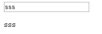
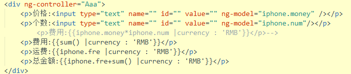
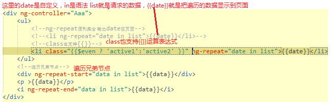
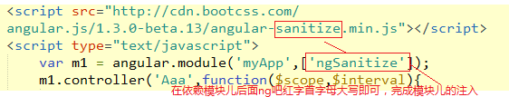
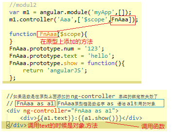
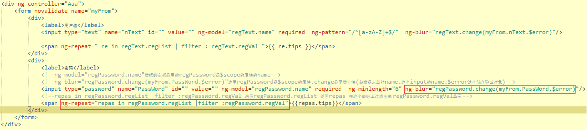

angualarJS入门 ng-app表明angualar在哪里生效 ng-controller ="Aaa"和函数 Aaa绑定function Aaa($scope,$rootScope) $scope局部依赖注入,$rootScope全局依赖注入 ng-click 事件注入
// {{xx}} 他找绑定函数的对象的时候,是从里到外,局部作用域$scope找不到就到全局作用域$rootScope去找
function Aaa($scope,$rootScope){
$scope.name = 'sss';
$scope.show = function(){
alert("1");
}
$rootScope.name = '第一个';
$rootScope.show = function(){
alert("2")
}
}
<div ng-controller ="Aaa" ng-click="name = 'ssss'">
<div ng-controller="Aaa" ng-click="show()">
{{name}}
</div>
<p>{{name}}</p> //这里的p是全局$rootScope的name
angualarJS指令 ng-modle //改变第一地方值的时候,另一个地方也改变
ng-app表明angualar在哪里生效,初始化,如果没这个appangualar是不会执行的
ng-controller ="Aaa" //ng-controller一个控制器,链接视图和数据的桥梁
ng-click //ng-事件点击 ,和js原生的事件类似
ng-modle //改变第一地方值的时候,另一个地方也改变

$scope.$watch("xx",function(){ },true)监听数据变化 参数1：监听的对象,（可以监听1个函数）2，监听成功的回调函数.3,当有ture这个参数的时候，可以监听多个参数 过滤器 |currency : '' 字符串参数可变
function Aaa($scope){
$scope.iphone = {//数据
money : 5,
num:1,
fre:10
}
$scope.sum = function(){//注意声明函数的时候 要带上作用域
return $scope.iphone.money *$scope.iphone.num;//这里也是在作用域下的.iphone.XX
}
//$scope.$watch 监听值 （参数1：监听的对象。2：监听参数成功之后的回调函数,3,设置为true的时候，如果监听对象是多个，那么就可以同时监听多个值）
// $scope.$watch("iphone.num",function(){//这里只能监听iphone.num值的变化情况
// console.log("1")
// })
// $scope.$watch("iphone.num",function(newVal,oldVal){//回调函数的两个参数，第一个是监听修改的值，第二个参数是修改之前的值
// console.log(newVal);//之前
// console.log(oldVal);//修改之后
// },true)//第三个参数,true
//$watch方法 还可以监听1个函数
$scope.$watch( $scope.sum,function(newVal,oldVal){//函数计算完之后的2个返回的值,新的值，修改之前的值
//当金额>100的时候 免邮
//邮费 = 如果$scope.sum 总金额》100 邮费变成0，否则就是10元邮费
$scope.iphone.fre = newVal >=100 ? 0 :10;
},true)//第三个参数
}

模块化 var m1 = angular.module('myApp',[]);创建1个模块儿 //吧普通的函数变成模块儿函数m1.controller
//吧下面的函数变成模块的写法
// function Aaa($scope){
// $scope.name = 'ss';
// }
//创建1个模块儿
var m1 = angular.module('myApp',[]);//2个参数，第一是模块儿的名字，第二个是依赖的模块儿，没有就空数组表示
//吧普通的函数变成模块儿函数
// m1.controller('Aaa',function($scope){//m1.constructor,第一个是函数的名称，第二个是回调函数
// $scope.name = 'ss';
// })
//防止压缩处理的模块儿写法
m1.controller('Aaa',['$scope',function($scope){//数组里面的字符串$scope和函数里面的形参是对应的，不管js被怎么压缩都不会影响
$scope.name = 'ss';
}])
angular的一些常用工具方法 angular.bind 修改this的指向angular.copy(); //对象拷贝 angular.extend();//对象的继承
//function show(n1,n2){
// alert(n1);
// alert(n2);
// alert(this);
// }
// //参数（修改的指针的对象,对应的函数）(参数。。。)，没有参数的写法是angular.bind(document,show)();
// angular.bind(document,show)(3,4);//修改this的指向,和jquery的$.proxy()类似
// angular.copy(); //对象拷贝
// var a = {name:"hello"};
// var b = {age:"18"};
// var c = angular.copy(a);
// alert(c);//name:"hello"
//2个或者多个copy的情况,//修改了拷贝的值，后面的对象被第一个覆盖
// var c = angular.copy(a,b);
// alert(c);//name:"hello"
// alert(b);//name:"hello"
// alert(a);//name:"hello"
// angular.extend();//对象的继承
var a = {name:"hello"};
var b = {age:"18"};
var c= angular.extend(b,a);
console.log(b)//name:"hello",name:"age",就是把a的值赋值给了b
angular.forEach(需要遍历的对象，function(){},接受的数组和其他) angular.fromJson字符串变jsonangular.toJson Josn变字符串
var values = ['a','b','c'];
var values2 = {
'name':'民族',
'age':'22'
};
//遍历数组
angular.forEach(values,function(val,i){//values是要循环的对象或者数组,val是得到的值,i是角标和jquery相反
console.log(val)//abc
console.log(i)//012角标
})
//遍历对象
angular.forEach(values2,function(val,key){//value,和key值
console.log(val)
console.log(key)
})
//把结果返回到1个数组
var retalt = [];
angular.forEach(values2,function(val,keys){//value,和key值
// console.log(val)
// console.log(key)
this.push(val+keys) //这里的this就是第三个参数retalt（这个要和你声明的数组相同）的引用
},retalt)
console.log(retalt);
// angular.fromJson和angular.toJson和原生js里面的Json.parse() 字符串->josn 和Json.stringify() json->字符串 类似
var str = '{"name":"面向","age":"14"}';
var josn = angular.fromJson(str); //字符串变成json对象
console.log(josn);
var str2 = {"name":"面向","age":"14"};
var josn2 = angular.toJson(str2); //json对象变成字符串
// var josn2 = angular.toJson(str2,true); //json对象变成字符串,如果有第二个参数angular就自动会格式化这个字符串便于阅读
console.log(josn2);
angular.element 这是angular内部选择元素的方法,他实现了一部分jquery内部的一些方法angular.element(DOM节点).css("background",'red');等等
var oDiv = document.getElementsByClassName("div");
angular.element(oDiv).css("background",'red');
但是引入jquery.js之后angular就会自动的让angular.element=$那么$("#oDiv").css("background",'red');就可以用了
------------------------------------------------------------>
angularJs内部实现的一些类似jquery的一些方法如css attr 等..
addClass()-为每个匹配的元素添加指定的样式类名
after()-在匹配元素集合中的每个元素后面插入参数所指定的内容，作为其兄弟节点
append()-在每个匹配元素里面的末尾处插入参数内容
attr() - 获取匹配的元素集合中的第一个元素的属性的值
bind() - 为一个元素绑定一个事件处理程序
children() - 获得匹配元素集合中每个元素的子元素，选择器选择性筛选
clone()-创建一个匹配的元素集合的深度拷贝副本
contents()-获得匹配元素集合中每个元素的子元素，包括文字和注释节点
css() - 获取匹配元素集合中的第一个元素的样式属性的值
data()-在匹配元素上存储任意相关数据
detach()-从DOM中去掉所有匹配的元素
empty()-从DOM中移除集合中匹配元素的所有子节点
eq()-减少匹配元素的集合为指定的索引的哪一个元素
find() - 通过一个选择器，jQuery对象，或元素过滤，得到当前匹配的元素集合中每个元素的后代
hasClass()-确定任何一个匹配元素是否有被分配给定的（样式）类
html()-获取集合中第一个匹配元素的HTML内容
next() - 取得匹配的元素集合中每一个元素紧邻的后面同辈元素的元素集合。如果提供一个选择器，那么只有紧跟着的兄弟元素满足选择器时，才会返回此元素
on() - 在选定的元素上绑定一个或多个事件处理函数
off() - 移除一个事件处理函数
one() - 为元素的事件添加处理函数。处理函数在每个元素上每种事件类型最多执行一次
parent() - 取得匹配元素集合中，每个元素的父元素，可以提供一个可选的选择器
prepend()-将参数内容插入到每个匹配元素的前面（元素内部）
prop()-获取匹配的元素集中第一个元素的属性（property）值
ready()-当DOM准备就绪时，指定一个函数来执行
remove()-将匹配元素集合从DOM中删除。（同时移除元素上的事件及 jQuery 数据。）
removeAttr()-为匹配的元素集合中的每个元素中移除一个属性（attribute）
removeClass()-移除集合中每个匹配元素上一个，多个或全部样式
removeData()-在元素上移除绑定的数据
replaceWith()-用提供的内容替换集合中所有匹配的元素并且返回被删除元素的集合
text()-得到匹配元素集合中每个元素的合并文本，包括他们的后代
toggleClass()-在匹配的元素集合中的每个元素上添加或删除一个或多个样式类,取决于这个样式类是否存在或值切换属性。即：如果存在（不存在）就删除（添加）一个类
triggerHandler() -为一个事件执行附加到元素的所有处理程序
unbind() - 从元素上删除一个以前附加事件处理程序
val()-获取匹配的元素集合中第一个元素的当前值
wrap()-在每个匹配的元素外层包上一个html元素
angular.bootstrap可以js动态初始化多个模块,ng-app只能初始化1个 angular.bootstrap(oDiv[0],['myAPP1']);第一个参数是DOM节点,第二个参数是绑定模块儿的名字,
//建一个模块儿
var module1 = angular.module('myAPP1',[]);
module1.controller('Aaa',['$scope',function($scope){
$scope.name = '我是模块儿的名字'
}])
//建2个模块儿
var module2 = angular.module('myAPP2',[]);
module2.controller('Aaa2',['$scope',function($scope){
$scope.name = '我是模块儿的名字2'
}])
document.onclick = function(){
var oDiv = document.getElementsByTagName("div");
// angular.bootstrap(document,['myAPP1']);
// 初始化多个模块儿
angular.bootstrap(oDiv[0],['myAPP1']);
angular.bootstrap(oDiv[1],['myAPP2']);
}
常用angular的一些简单方法
var a = [];
// console.log(angular.isArray(a))//true,类似于这种用法
// angular.isArray //判断是不是数组
// angular.isDate //判断是不是时间对象
angular.isDefined //判断1个元素是不是存在的,返回Undefined是假，不返回是真
angular.isUndefined //判断1个元素是不是存在的,返回Undefined是真，不返回是假
angular.isFunction //判断是不是函数
angular.isNumber //判断是不是数字
// angular.isObject //判断是不是对象
angular.isString //判断是不是字符串
angular.isElement //判断是不是元素
angular.version //判断当前angular的版本
angular.equals //判断2个元素是不是相等
// var a = 1;
// var b = 1;
// Console.log(angular.equals(a,b))//true
angular.lowercase/uppercase //吧字符串变大写/小写
// angular.uppercase('heel'); //HEEL转大写,小写 类似
angular.injector //内部使用的注册器
angular.$apply 他可以监听数据,当angular.$apply里面的回调函数改变的时候,视图也就改变了
setTimeout(function(){
$scope.$apply(function(){ //用$scope.$apply的时候,当里面的数据发生改变的时候,他会渲染视图让视图也改变
$scope.name = 'hi'
})
},2000)
run模块儿可以省略掉ng-controller关联的这一环节,直接把所需要加载的数据挂在到全局作用域下面 $rootScope
//run只有全局的作用域
var m1 = angular.module('myAPP',[]);
m1.run(['$rootScope',function($rootScope){
$rootScope.name = 'hello';
}])
//在ng-app初始化的情况下是可以省略控制器的
<p>{{name}} </p>
常见的过滤器 {{xx |过滤器名称 :'参数' }} $filter 过滤服务注入过滤器的组合使用 | 间隔开
货币过滤器
{{name |currency : "RMB"}}</p>
和货币单位类似只是没单位，默认截取三位小数点
<p>{{name |number}}</p>
大小写 HELLO
<p>{{sex |uppercase}}</p>
在pre标签里面可以格式化json 记得在pre里面
<pre> {{name |json}}</pre>
limitTo 截取字符串,只有1个参数的时候截取前面2位字符串，
<p>{{name |limitTo:2}}</p>
日期过滤器 date : 'xxxx'有很多对象 具体看api
<p>{{time |date : 'yyyy'}}</p>
orderBy排序 默认从小到大的顺序 带上第二个参数 true之后就是从大到小
<p>{{name |orderBy : 'age' : true}}</p>
filter过滤器 里面的参数是red 那么只会剩下含有red的value值的那一条数据 [{"color":"red","age":"23"}]
<p>{{name |filter :'red'}}</p>
过滤器的组合使用用|区别开
<p>{{name |limitTo :2 |uppercase }}</p>
自定义过滤器 模块儿对象.filter(过滤器名称',function(){)回调) //自定义过滤器js的调用方法$scope.属性 = $filter("过滤器名称")('处理的对象');
{{name |firstUp :2}}//行间表达式方法
var m1 = angular.module('myApp',[]);
//.flter自定义过滤器
m1.filter('firstUp',function(){ //这里的firstUp要和{{name |firstUp :2}}对应如果有参数，这里比如为2,这个参数和回调里面的第二个参数对应num
return function(str,num){//这里的str参数,返回的 就是你需要改变的对象或者字符串
console.log(num);//2 ,这里的第二个参数，就是过滤器的参数
return str.charAt(0).toUpperCase()+str.substr(1);
}
})
m1.controller('Aaa',['$scope','$filter',function($scope,$filter){
// $scope.name = 'hello';
//自定义过滤器js的调用方法
$scope.name = $filter("firstUp")('hello');
}])
ng-repeat便利集合 输出数据在页面 以及ng-repeat的一些辅助方法 和class 也支持{{表达式}}
var m1 = angular.module('myApp',[]);
m1.controller('Aaa',['$scope',function($scope){
$scope.list = //list数据集合
[
'aaa','bbb','ccc'
];
}])

//ng-repeat的一些辅助方法,他们返回的都是布尔值
$index //索引
$first //第一个数据
$middle //除开首尾中间的部分
$last //最后一个数据
$even //奇数
$odd //偶数
//通过遍历用daye输出数据，在class里面通过辅助方法，达到一些效果实例
<li> class="{{$even ? 'active1':'active2' }}" ng-repeat="date in list">{{date}}</li>
//实现兄弟之间的遍历操作,他们2个需要同时存在
ng-repeat-start //开始遍历
ng-repeat-end //结束遍历
<div ng-repeat-start="data in list">{{data}}</div>
<p >{{data}}</p>
<i ng-repeat-end="data in list">{{data}}</i>
ng-repeat=""和ng-module数据绑定遍历数据运用 通过一个表格的操作demo练习,搜索框和过滤条件以及和ng-module的数据绑定的说明 注意第二次是在原有的数据搜索的,所以要用变量存1次
表格操作
其他的angualarJS的事件指令 和ng-click用法完全类似服务 $interval //定时器服务注入 ，以及关闭定时器$interval.cancel(定时器对应的对象);
ng-click/dblclick //鼠标单击、双击
ng-mousedown/up //鼠标按下、抬起
ng-mouseenter/leave
ng-mousemove/over/out //鼠标移入移除移动
ng-keydown/up/press//键盘按下 抬起
ng-focus/blur //得到和失去光标
ng-submit //提交的时候
ng-selected //复选框
ng-change //change事件
ng-copy //复制
ng-cut //剪切
ng-paste //粘贴
input指令
ng-disabled //表单无法操作，按钮无法点击
服务 $interval //定时器服务注入 ，以及关闭定时器$interval.cancel(定时器对应的对象);
ng-readonly //表单无法操作，但是可以获得光标
ng-checked //单选复选框操作
ng-value //input操作里面的value，用ng-value可以省略{{}}，推荐
优化表达式被提前解析的几种方式以及引入依赖模块儿的方法 在angularJS中 引入模块儿 ng-cloak添加之后可以优化被解析
<div ng-controller="Aaa">
<p>{{name}}</p>
//这个和楼上的表达式意思一样，但是可以避免被提前解析
<p ng-bind="name"></p>
解析多次,ng-bind就不行了
<p>{{name}},{{name}}</p>
//这个和上面的一样，可以避免提前解析
<p ng-bind-template="{{name}},{{name}}"></p>
//连标签也需要一起呗解析，但是这种需要引用其他的模块儿
<p ng-bind-html="age"></p>
//也可以引用ng-cloak在达到类似效果
<p ng-cloak>{{name}}</p>
//ng-ng-non-bindable 解析的文本就是表达式本身
<p ng-non-bindable>{{name}}</p>
</div>

style样式的指令 ng-class ng-styleng-attr-(suffix)通用的属性操作 比如ng-src 等于 ng-attr-src
//ng-class用法 red是class的名称，true，是1个开关，多个class用逗号间隔开
//行间
<p ng-class="{red:true,yellow:true}">{{name}}</p>
//表达式方式的class
<p ng-class="{{Sclass}}">{{name}}</p>
//行间
<p ng-style="{color:'red',background:'#000'}">{{name}}</p>
//ng-style 表达式的方式 需要加上{{}}
<p ng-style="{{style}}">{{name}}</p>
//ng-herf
<a ng-href="{{herf}}">aaaaaaaa</a>
//ng-src
<img ng-src="{{src}}"/>
//ng-attr-(suffix)通用的属性操作 比如ng-src 等于 ng-attr-src
<a ng-attr-href="{{herf}}" ng-attr-title="{{style}}" ng-attr-class="" ng-attr-style="">aaaaaaa</a>
DOM的一些指令 ng-show = true 是显示 false为隐藏 -->css操作ng-if = true 或者false 对DOM节点的添加或删除 ng-switch 他是通过on和其他属性绑定的
<div ng-controller="Aaa" ng-app="">
<input type="checkbox" name="" id="" value="" ng-model="bBtn" />
//ng-show = true 是显示 false为隐藏 -->css操作
<p ng-show="bBtn">{{name}}</p>
ng-if = true 或者false 对DOM节点的添加或删除
<p ng-if="bBtn">{{name}}</p>
//两个盒子互相切换
<div ng-switch="" on = 'bBtn'>
<p ng-switch-default="">默认的样式</p>
<p ng-switch-when="false">切换的效果</p>
</div>
//ng-open 控制details标签的open属性
<details ng-open="bBtn">
<summary>Copyright 2011.</summary>
<p>All pages and graphics on this web site are the property of W3School</p>
</details>
</div>
指令的部分扩展 模板的调用 ng-include="'indexsss.html'" 里面indexsss.html跟着的就是模板网站引入即可ng-model-options="{updateOn : 'blur'}扩展数据绑定的触发方式 ng-controller as 原形链调用
//行间数据的方式 ng-init="name ='写的样式'"
<div ng-controller="Aaa" ng-init="name ='写的样式'">
<p>{{name}}</p> //写的样式
</div>
//模板的调用
<div ng-controller="Aaa" ng-include="'indexsss.html'">
</div>
//ng-modul的扩展可以设定在啥情况下ng-modul才触发 ng-model-options="{updateOn : 'blur'} 注意是单括号{}
<div ng-controller="Aaa">
//绑定数据，ng-model-options="{updateOn : 'blur'}在失去焦点的时候，数据绑定 才生效
<input type="text" name="" id="" value="" ng-model="name" ng-model-options="{updateOn : 'blur'}"/>
<div>{{name}}</div>
</div>
//如果函数是在原型上面添加的 ng-controller 单纯的绑定就失效了
// FnAaa as a1 FnAaa原型链函数名字 as 语法 a1引用的对象
<div ng-controller="FnAaa as a1">
<div>{{a1.text}}:{{a1.show()}}</div>
</div>

标签指令
$valid //有效的表达式 验证成功就是true 失败就是false
$invalid //无效的表达式 失败就是true，成功就是true
$pristine //原始值(没修改过值就是true，一旦修改过就是false)
$dirty //修改之后的值就是true，没修改就是false
$error //综合值,验证通过true，失败false
注意点
name的方式进行查找
要写ng-model
required //是否为空
ng-minlength //最小值
ng-maxlength //最大值
ng-pattern //正则
//自定义表单验证失败成功的class,这里的class可以直接在class定义样式
.ng-valid{} //成功
.ng-invalid{} //失败
.ng-pristine{}
.ng-dirty{}
<div ng-controller="Aaa">
<form novalidate name="myFrom">
<input type="text" name="mytext" id="" value="" ng-model="text" required ng-minlength="5"/>
<div>{{myFrom.mytext.$valid}}</div>//有效的表达式 验证成功就是true 失败就是false
<div>{{myFrom.mytext.$invalid}}</div> //无效的表达式 失败就是true，成功就是true
<div>{{myFrom.mytext.$pristine}}</div>//原始值(没修改过值就是true，一旦修改过就是false)
<div>{{myFrom.mytext.$dirty}}</div> //修改之后的值就是true，没修改就是false
<div>{{myFrom.mytext.$error}}</div> //综合值,验证通过true，失败false
</form>
</div>

var m1 = angular.module('myApp',[]);
//如果这里的hello是myHello,下面的标签完全可以用my-hello替换
m1.directive('Hello',function(){
return {
restrict:'EACM', //E以标签的形式 A以属性的形式 C解析成class对应的指令 M模板
replace :true,//模板替换标签 属性 Class 注释等
template: '<div>HELLO aNGURLAE</div>' // 在本页面 模板的声明
scope:true,// scope独立作用域,可以让每个标签都有自己的作用域，默认是false，数据共享
scope:{},//隔离作用域，外面的值影响不了内部的
controller:['$scope',function($scope){ //在隔离作用域中公共的可以写在这里
$scope.name = 'pengjin';
}],
scope:{ //不是公共的数据可以申明在这里
myId :'@',//指的就是绑定普通字符串
myName :'=', //=号指的就是controller里面的数据
myFn : '&'
},
templateUrl:'temp2.html' //引入1个外部链接的形式
}
})
m1.controller('Aaa',['$scope',function($scope){
$scope.list = 'name'
}])
//引用模板的几种方式
//如果上面是驼峰的话，这里可以这样引用
<my-hello></my-hello>
标签类型的</i>
<hello></hello>
<i>属性形式的</i>
<p hello></p>